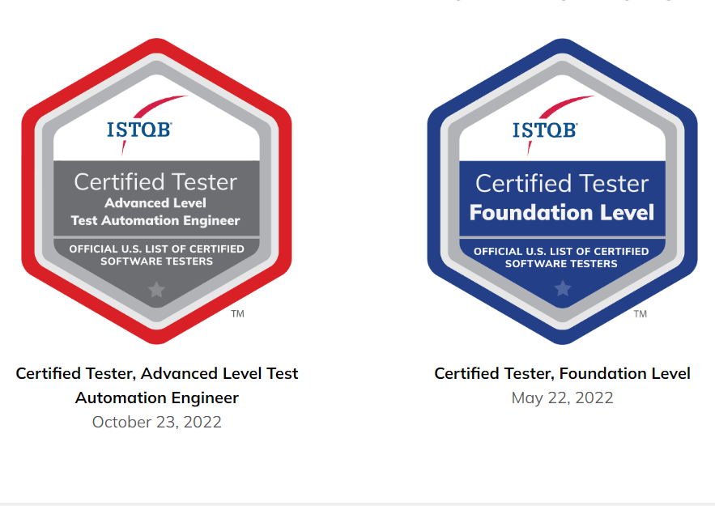

Performance Tests with Artillery and Playwright
Docker-based performance testing harness pairing Artillery with Playwright for realistic browser-load scenarios.
View repositoryPlaywright/ Cypress/ Selenium/ C# · .NET/ TypeScript/ Python/ Java/ React · Next.js/ AWS/ Kafka · SQS
01 — AboutProfile
I'm a versatile technology professional with 9+ years of experience spanning QA leadership, test automation, and full-stack development. As QA Lead I oversee quality assurance for complex cloud migrations and event-driven architectures, architecting robust testing frameworks across multiple languages (C#, TypeScript, Python, Ruby, Java).
I maintain strong full-stack development capabilities with modern frontend (Angular, React, Next.js) and backend (Node.js, .NET, Flask, Python) technologies, and I'm ISTQB-certified with a track record of leading distributed teams, implementing CI/CD practices, and delivering scalable solutions from concept to production.
02 — Selected workOpen Source
Open-source projects spanning performance testing, full-stack development and cross-platform tooling.
Docker-based performance testing harness pairing Artillery with Playwright for realistic browser-load scenarios.
View repositoryReal-time options game with an Angular frontend and a Python backend handling market data and state.
View repositorySingle installer distributing digital signature software across Linux, Windows and macOS.
View repository03 — Experience2018 — Present
A decade of quality engineering and full-stack delivery.
Leading QA initiatives for the migration from a monolithic .NET architecture to cloud-based, event-driven microservices — owning quality assurance across the core Documents team and its distributed testing strategies for multiple APIs and SQS/Kafka event-driven workflows.
Environment C# · .NET · xUnit.net · GitHub · AWS · Terraform · Azure DevOps · Playwright · Cypress · JMeter · Datadog · SQS · Kafka · NuGet
Modernization Team Aug 2022 — Jul 2024
Environment C# · .NET · xUnit.net · Azure B2C · GitHub Copilot · Terraform · Azure DevOps · Selenium · Cypress · NuGet
Organizers Team Jul 2022 — Aug 2023
Environment C# · .NET · xUnit.net · MS SQL Server · Azure DevOps · Fiddler · PowerShell · TestStack.White · FlaUI
Environment Python · Angular · Ionic · Flask · MySQL · MongoDB · Redis · Celery · Docker · SocketIO · NumPy · Pandas
Environment Java · PHP · WordPress · Docker · LibreOffice SDK · Shell Script · Batch Script · Git
04 — Résumé
Download the full résumé for extended experience, skills and credentials.
PDF · 233 KB · EN
05 — EducationDegree
01
06 — CertificationsVerified
International Software Testing Qualifications Board — Foundation and Advanced levels, publicly verifiable.
View public profile
ISTQB® Badges — 2022